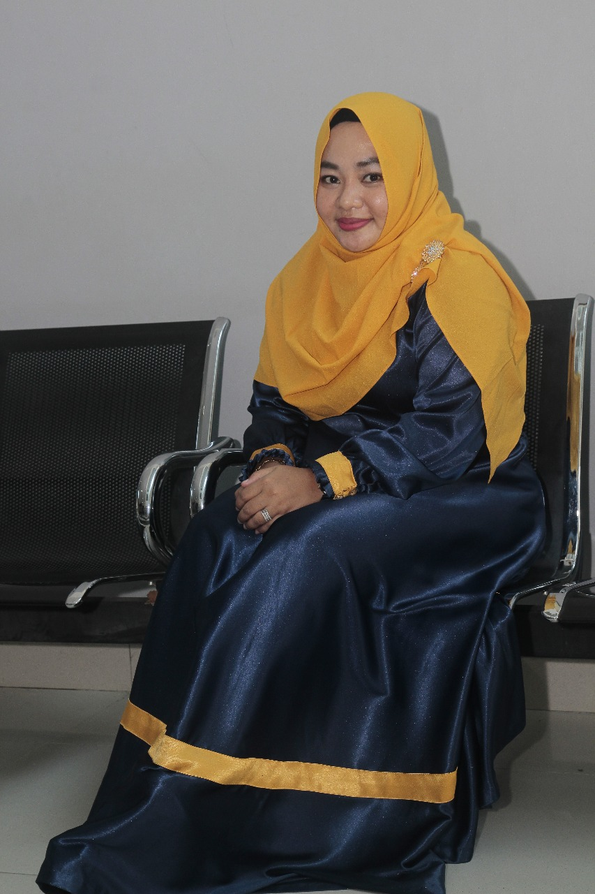
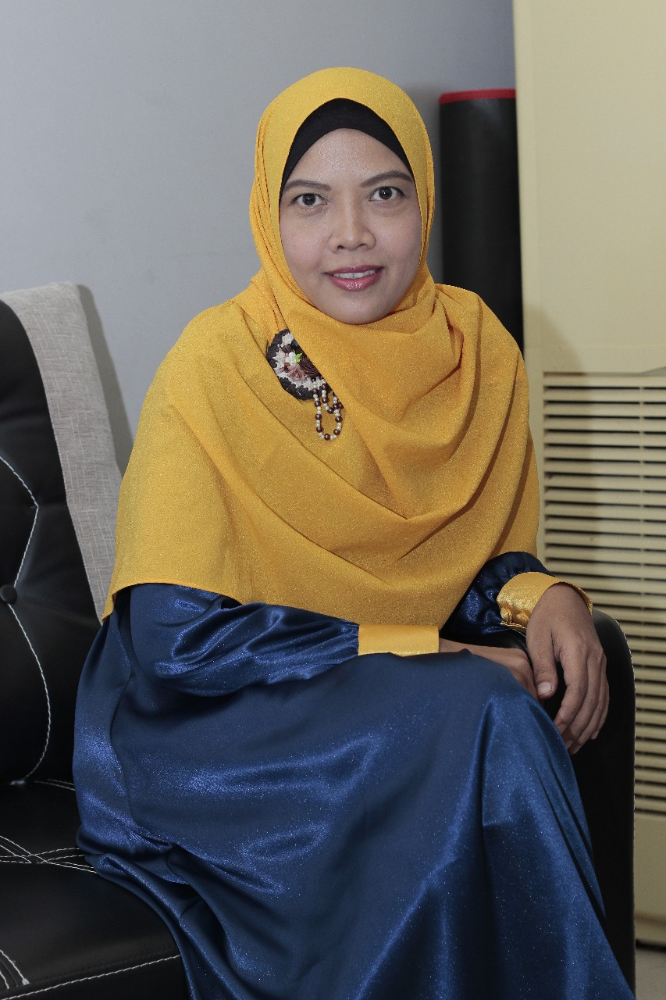
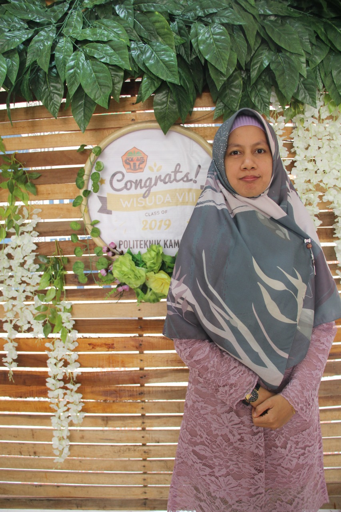

|  |
Nina Veronika ST,M.ScDirektur Politeknik KamparLulusan S2 Glasgow Caledonian University. Mempunyai keahlian dibidang Teknik Pengolahan Limbah. |
 |
Nur Asma Deli, ST. MSiWakil Direktur II Bidang KeuanganLulusan S2 dari Insitut Pertanian Bogor. Mempunyai keahlian dibidang Refinery dan Produk Turunan Minyak Sawit |
|
|  |
Fatmayati, ST. MSiKaprodi TPSLulusan S2 Institut Pertanian Bogor. Mempunyai keahlian dibidang Teknologi Pengolahan Sawit. |
Rusman Rianto, ST. MScDosen TPSLulusan S2 Glasgow Caledonian University. Mempunyai keahlian dibidang Teknik Pengolahan Limbah. |
||
Sri Wahyuni, SPDosen TPSLulusan S1 Universitas Padjajaran.\ Mempunyai keahlian dibidang Budidaya Perkebunan. |
Anna Dhora, STP. MPDosen TPSLulusan S2 Universitas Andalas. Mempunyai keahlian dibidang Teknologi Pasca Panen. |